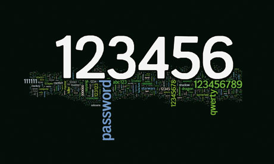

（浏览器快捷键提示：Ctrl + 或者 Ctrl - 可放大或缩小字体）
我觉得还是有必要分享和推荐一些关于密码安全的文章、策略和工具。
其实都是老生常谈了，主要还是推荐用工具辅助我们解决密码管理的问题。

【啰嗦开始/ 可以忽略此部分
背景是在互联网上我们的账号和密码越来越多，该如何既保证记忆方便又保证可靠安全，我们需要一个密码管理策略。（中病毒、中木马、被钓鱼之类不在此文范围）
密码安全的一个障碍是有一些人还不了解，可能另有一个很大的障碍是很多人怕麻烦。其实一套合适的方法运用之后，不会比之前麻烦多少，但个人账户安全性会大大提升，而且部分（比如每次登陆输入账号和密码）还会更便捷。
甚至还有些人不在乎自己的账号安全，觉得被盗也不怕。但是自己的账号不安全也会危及到亲朋好友，因为社交网络里有着大量的个人信息，比如你们之间可以互访的个人资料，聊天记录，分享的文档，发送的电邮，购物信息等等，若泄漏也会造成和你有联系的人的账户被间接攻击，ta们的个人隐私也会泄漏。还有一个常见的情况就是亲朋好友被“你”欺骗（账号被骗子盗用冒充你去坑蒙拐骗什么的）。
可以花点时间了解和操作一下， 密码是私人的事，还得靠自己。
可以解决包括但不限于以下几种密码安全隐患：
为了方便记忆使用弱口令（比如：123456，888888，qwerty，生日，姓名拼音和生日，等等），太容易被爆菊了！
用一种有规律的组合，不同网站密码不一样（例如：姓名拼音+一串固定数字+网站名称），这个挺好的，密码够复杂也好记，但是一旦泄漏一个密码，别的密码很容易猜出来。如果你使用这种策略很久了，那么有非常大的可能你的某个网站密码已经泄漏了，大网站被黑也不是罕见的事，何况那些小网站呢。
（待补充）
/啰嗦结束】
首先来看一篇老文：
从泄密门分析中国网民习惯。大批网站泄漏了巨量的用户名和密码，是的，没错，我们的密码不仅仅是在自己电脑中病毒或木马时才会泄漏。
大家都越来越依赖各种口令保护自己的数字财产和个人隐私，我们应该好好设计一下密码策略，提高个人密码的安全性，防止自己的个人信息遭受威胁和攻击。推荐看龙威廉的博文：
个人密码安全策略
实际上你会发现，虽然帐号可以通用，但密码最好是每个网站都不一样，而且密码最好是随机的。但这样虽然安全了，用起来也太不方便了。还好，总会有优秀的工具来帮助我们解决问题。
个人推荐策略是：
主邮箱、网银和密码管理工具的口令等最为核心的几个密码记在自己的大脑里，做好身份绑定和启用密码找回功能，并开启二次验证（如果有的话）。
其他重要性较低的网站密码采用 LastPass / KeePass 来管理，而且是用随机生成的密码（工具可以辅助生成），并开启密码找回功能绑定到主邮箱。
对于一些不重要的网站（比如只是要下载个素材非得让你注册的，或者一些明显不专业的网站），换成用次邮箱注册，避免主邮箱泄漏和被骚扰，密码同样是用工具来随机生成和管理。
LastPass
KeePass
相关文章：
更新记录：